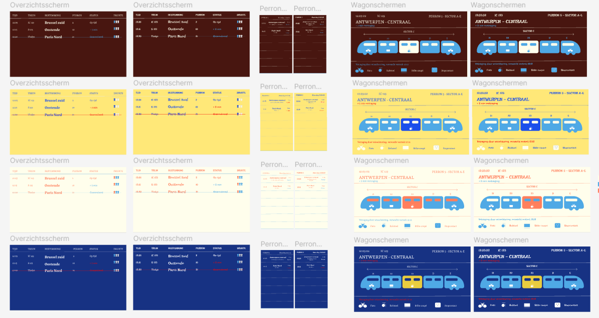

Week 8
In deze week hebben we ons verder verdiept in Figma. We maakten gebruik van herbruikbare componenten, zodat dezelfde elementen eenvoudig in meerdere projecten toegepast kunnen worden.
Daarnaast hebben we onze kennis van HTML uitgebreid door interactieve effecten toe te voegen. Zo leerden we bijvoorbeeld hoe je een hover-effect kunt toepassen, waardoor elementen veranderen wanneer je er met de muis overheen beweegt.
Door deze combinatie van herbruikbare Figma-componenten en HTML-interacties konden we zowel onze ontwerpen als de webpagina’s consistenter en dynamischer maken. Hierdoor werd het makkelijker om professionele en uniforme interfaces te creëren.
Deze week stond vooral in het teken van efficiënt ontwerpen, component-gebaseerde workflows en het toepassen van interactiviteit in onze webprojecten.
